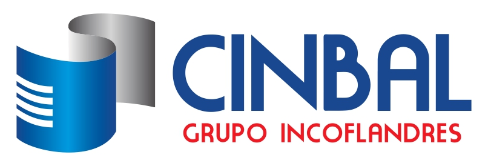
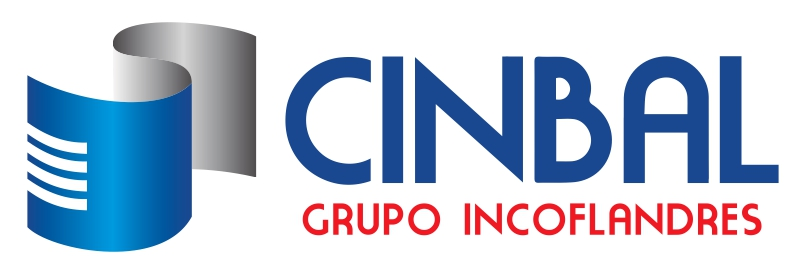
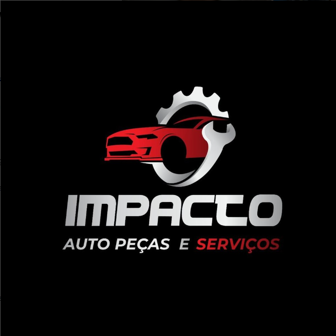
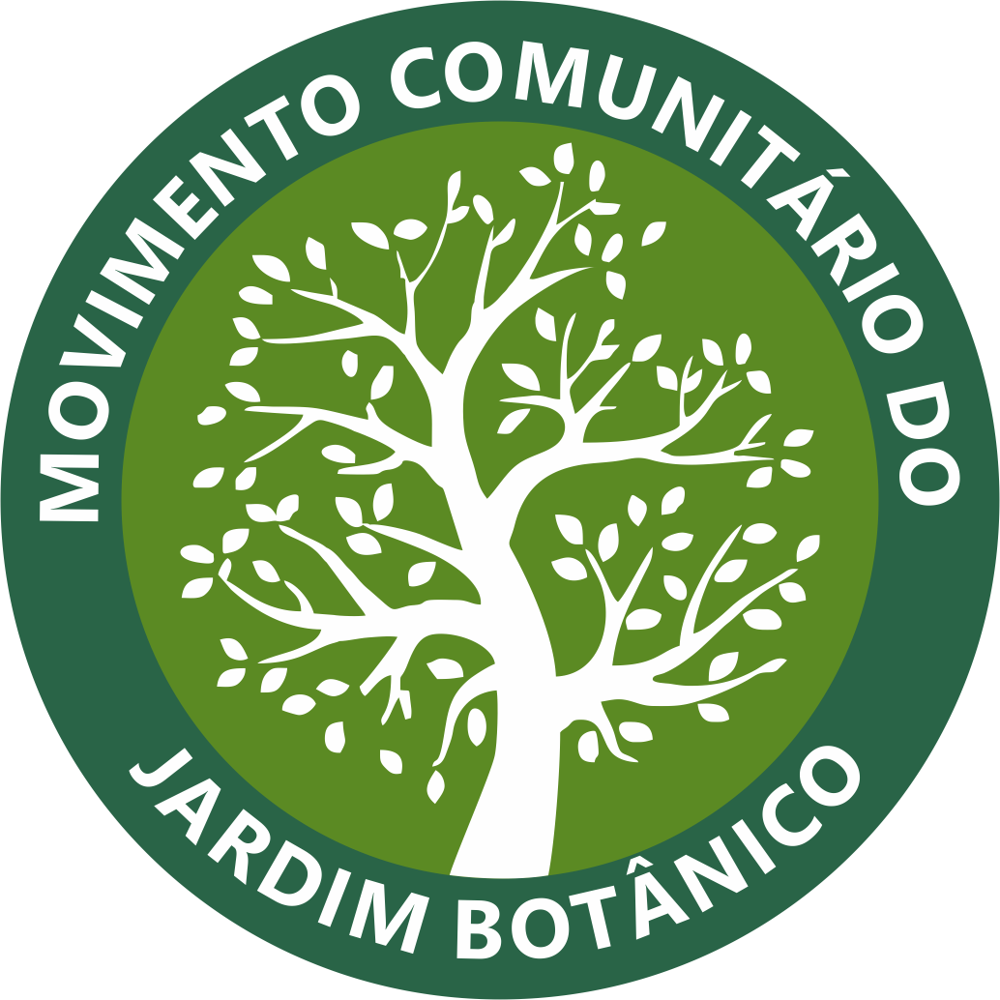
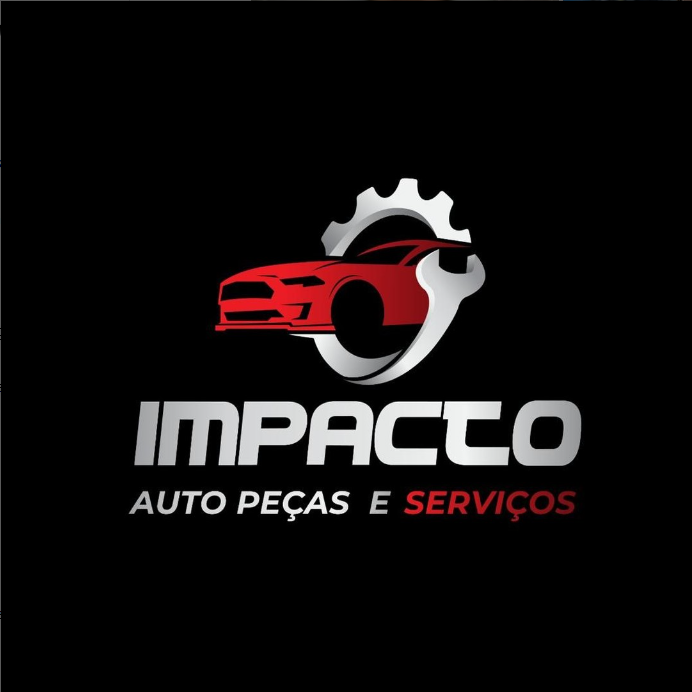
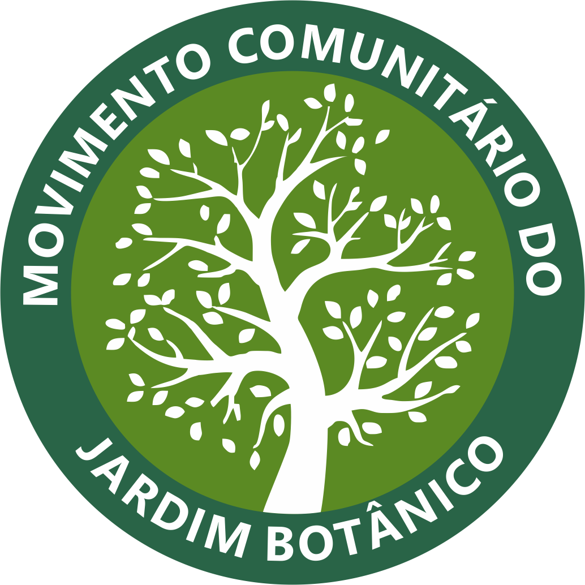
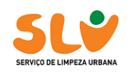
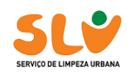

Coleta e Triagem
Coleta de recicláveis, triagem eficiente e destinação adequada dos materiais.
Ler maisPromovemos a coleta seletiva, a triagem de recicláveis e a sensibilização da comunidade para um futuro mais verde.

A Cooperativa de Trabalho de Catadores Ecolimpo, é um empreendimento social de economia solidaria, fundada em São Sebastião-DF desde julho de 2013, sendo formada exclusivamente por catadores de materiais recicláveis, de acordo com a lei 12.690/2012.
Soluções para empresas, condomínios, escolas e órgãos públicos.
Coleta de recicláveis, triagem eficiente e destinação adequada dos materiais.
Ler maisPalestras, oficinas e campanhas de conscientização para escolas e comunidades.
Ler maisParceria com a Associação Enlace das Arteiras, formada por mulheres artesãs que transformam materiais que não conseguimos reciclar em artesanato, gerando renda e impacto social.
Ler maisPessoas e organizações que apoiam nossos projetos e iniciativas.
 

 



 



Resultados que mostram nosso impacto.
O objetivo é aproveitar ao máximo os recicláveis e orgânicos, evitando envio para aterros e incineração.
Ser lixo zero é crucial porque promove um estilo de vida e sistema que emulam ciclos naturais, evitando aterros e incineração ao repensar, reduzir, reciclar, reutilizar, recusar, compostar resultando em um planeta mais saudável, economia circular , menos poluição (solo, água, ar). A meta e desviar 90% dos resíduos, focando na responsabilidade compartilhada e na dignidade de todos.
Adote hábitos conscientes e evite descartáveis quando possível.
Compre apenas o necessário e prefira embalagens sustentáveis.
Reaproveite frascos, use copo/garrafa/caneca e prolongue a vida útil dos itens.
Encaminhe os recicláveis limpos, sem restos de comida.
Recuse produtos descartáveis e não recicláveis, priorizando opções mais sustentáveis e reutilizaveis.
Transforme resíduos orgânicos em adubo para horta e jardins, contribuindo para a nutrição do solo e evitando o desperdício.
Acompanhe ações, projetos e conteúdos de educação ambiental.
Educação ambiental desde cedo: boas práticas, oficinas e reciclagem.
Ler maisVoluntários e parceiros unidos para manter nossa cidade mais limpa.
Ler maisProjeto de educação ambiental voltado para crianças, que promove a conscientização sobre reciclagem, cuidando com o meio ambiente e práticas sustentáveis de forma lúdica e educativa.
Ler mais